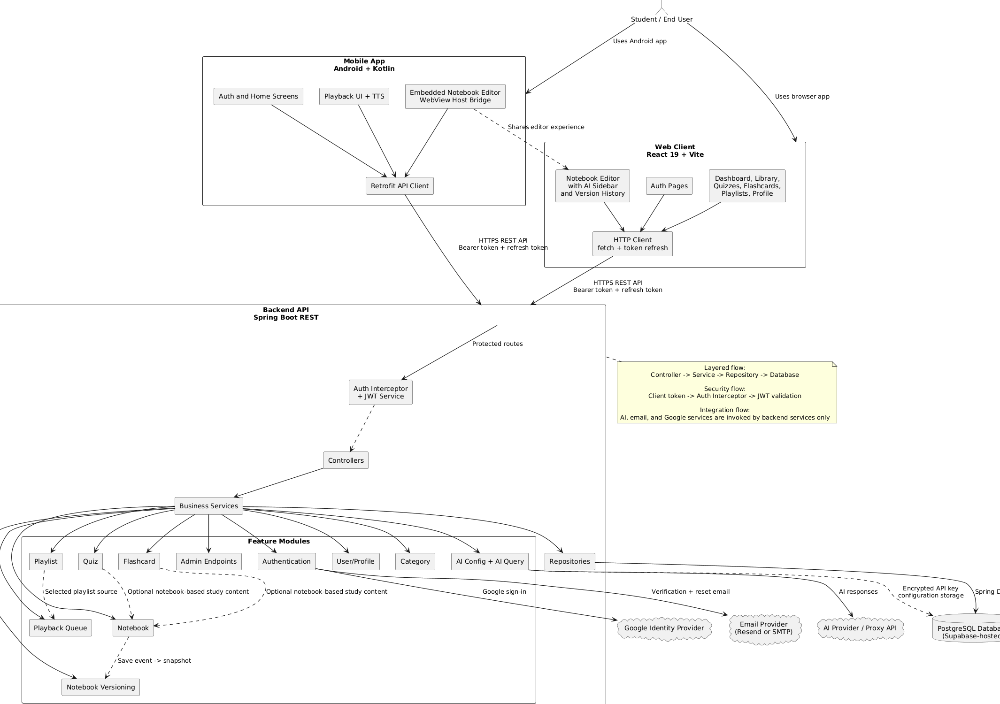
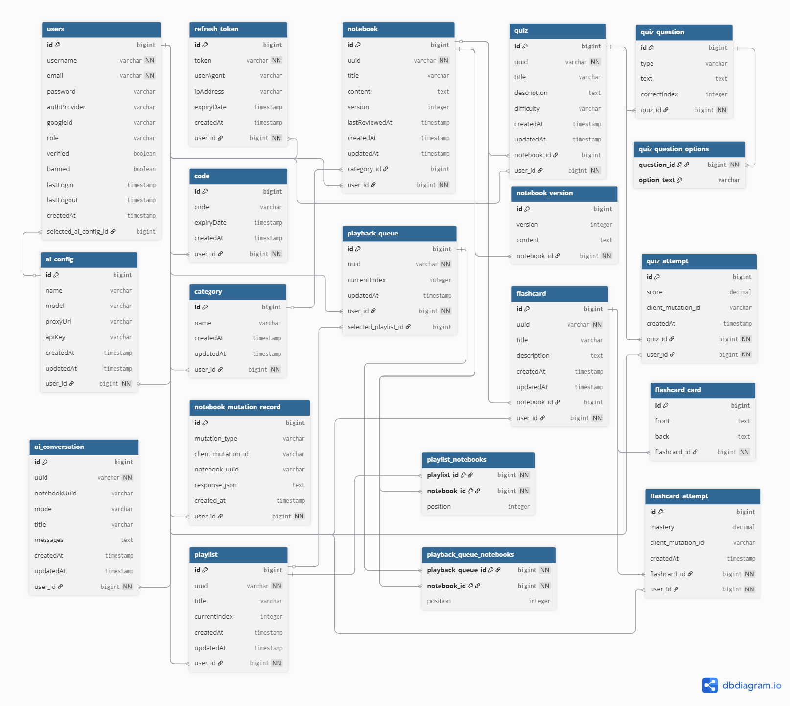
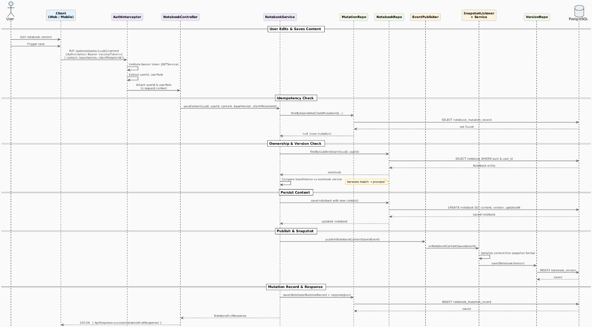

Purpose of the system
BrainBox is designed to centralize study activities inside one integrated platform instead of making users depend on separate tools for note-taking, recall practice, and content organization.
Integrated Study Platform
A web and mobile learning system that combines notebooks, AI assistance, quizzes, flashcards, playlists, playback, and version history into one connected study workflow.
This slide answers the four questions your instructor expects first: purpose, problem, users, and overall goal.
BrainBox is designed to centralize study activities inside one integrated platform instead of making users depend on separate tools for note-taking, recall practice, and content organization.
Many learners switch between disconnected apps for notes, flashcards, quizzes, and playback. That fragmented workflow slows study sessions and makes content harder to manage consistently.
The primary users are students and self-directed learners who want one system for managing study content, reviewing material, and using AI-assisted learning support.
The project goal is to deliver a secure, cross-platform study environment where content creation, revision history, AI support, and active recall tools work together through a unified backend architecture.
Only implemented features are shown here, grouped by what they contribute to the user workflow.
BrainBox is not only a notebook app. It combines secure access, learning-content management, AI-assisted study support, active recall tools, and guided playback inside one system connected to the same backend API.
Registration, email verification, login, logout, refresh token handling, forgot password, reset password, and Google sign-in.
Notebook CRUD operations, categorized content, recently edited tracking, recently reviewed tracking, and persistent notebook content saving.
Notebook-based AI prompting, configurable AI provider settings, AI conversations, and generation support for study content.
Quizzes, flashcards, playlist organization, playback queue management, and review or listening flows connected to notebook content.
Notebook version snapshots, restore version capability, and access from both the web client and the Android mobile client through the same backend API.
This slide summarizes the architecture styles and design patterns used by the web client, mobile app, backend API, database, and external services.

This diagram summarizes the web client, Android mobile app, Spring Boot backend, security layer, feature modules, PostgreSQL database, and external services in one system view.
The repository is separated by platform at the top level, while the backend and mobile app organize business logic inside feature modules and packages.
brainbox/
|-- web/
| `-- src/
| |-- auth/
| |-- home/
| |-- notebook/
| |-- ai/
| `-- common/
|-- backend/
| `-- src/main/java/edu/cit/gako/brainbox/
| |-- modules/{auth, notebook, quiz, flashcard,
| | playlist, playbackqueue, ai, user, category}
| |-- platform/
| `-- shared/
|-- mobile/
| `-- app/src/main/java/edu/cit/gako/brainbox/
| |-- app/
| |-- features/{auth, home, notebook, playback}
| |-- platform/
| `-- shared/
`-- docs/
The root of the project clearly separates the web client, backend API, Android mobile app, and project documentation, which supports multi-platform development and maintenance.
The React client is grouped into auth, home, notebook, ai, app, and common. Those folders contain the routes, components, hooks, contexts, and API services used by each feature or shared layer.
The backend is organized by feature. Each module keeps related endpoints, services, repositories, DTOs, and entities close together, so notebook logic stays inside the notebook slice, auth logic stays inside auth, and the same pattern applies to quiz, flashcard, playlist, playback queue, AI, user, and category.
The Android project follows the same feature-oriented idea through features, supported by app, platform, and shared. This keeps mobile flows readable while shared infrastructure remains reusable.
This is the concrete request path from the web client to the backend service, database write, and version snapshot listener.
PUT /notebooks/{uuid}/content request.
saveContent: (notebookUuid, content) =>
apiCall(
`/notebooks/${notebookUuid}/content`,
'PUT',
{ content }
)
@RequireAuth
@PutMapping("/{uuid}/content")
public ResponseEntity<ApiResponse<NotebookFullResponse>> saveContent(...) {
return ResponseEntity.ok(ApiResponse.success(
notebookService.saveContent(notebookUuid, userId, body.getContent(), ...)));
}
notebook.setContent(nextContent); Notebook savedNotebook = notebookRepository.saveAndFlush(notebook); eventPublisher.publishEvent( new NotebookContentSavedEvent(this, savedNotebook, savedNotebook.getContent()) );
@EventListener
public void onNotebookContentSaved(NotebookContentSavedEvent event) {
notebookVersionSnapshotService.createSnapshot(
event.getNotebook(), event.getContent()
);
}
Sensitive integrations are coordinated through backend controllers and services rather than direct client-side calls.
The backend exposes a dedicated authentication endpoint, then validates Google tokens on the server side before creating or linking a user.
@PostMapping("/google")
public ResponseEntity<ApiResponse<LoginResponse>> googleAuth(...) {
return ResponseEntity.ok(ApiResponse.success(
authService.googleLogin(...)
));
}
.uri(URI.create(
"https://oauth2.googleapis.com/tokeninfo?id_token=" + idToken
))
Verification links and password-reset messages are generated and sent through backend email services, not by the client directly.
String verificationLink = baseUrl + "/api/auth/verify-email?token=" + token; emailService.sendEmail( request.getEmail(), "Account Verification", emailTemplateService.buildVerificationEmail(username, verificationLink) );
The backend checks notebook ownership, loads the saved AI configuration, decrypts the API key, builds the prompt, and only then makes the server-side provider call.
notebookService.getNotebookByUuidAndUserId( aiRequest.getNotebookUuid(), userId ); AiConfig config = aiConfigService.getConfigEntity(userId); String apiKey = aiConfigService.decryptApiKey(config); String aiMessage = aiProvider.generateResponse( config.getProxyUrl(), apiKey, config.getModel(), messages, 0.4 );

The ERD shows how users, notebooks, notebook versions, AI configuration, conversations, quizzes, flashcards, playlists, playback queues, refresh tokens, categories, and study attempts are stored as related persistent records.

This sequence focuses on the main success path: client request, JWT validation, controller forwarding, service checks, repository persistence, event publication, snapshot creation, and response return.
Insert your recorded walkthrough of the working BrainBox system here.
Insert Recorded Demo Video Here
Replace this placeholder with your final recorded system walkthrough.
End the presentation by summarizing the system as an integrated architecture, not only as a collection of features.
BrainBox demonstrates systems integration through a multi-client architecture, a modular monolith backend, layered REST request handling, secure authentication, database-backed persistence, and controlled communication with external services.
Both the web client and Android mobile app connect to the same backend API and share core backend capabilities.
Controllers, services, repositories, feature modules, and shared infrastructure are visible in the actual project structure and code files.
Notebook saving, version snapshots, Google sign-in, email delivery, and AI provider access are all implemented through actual code paths, not only diagrams.
The project delivers one integrated study platform that supports content creation, review, recall practice, and guided playback across multiple clients.